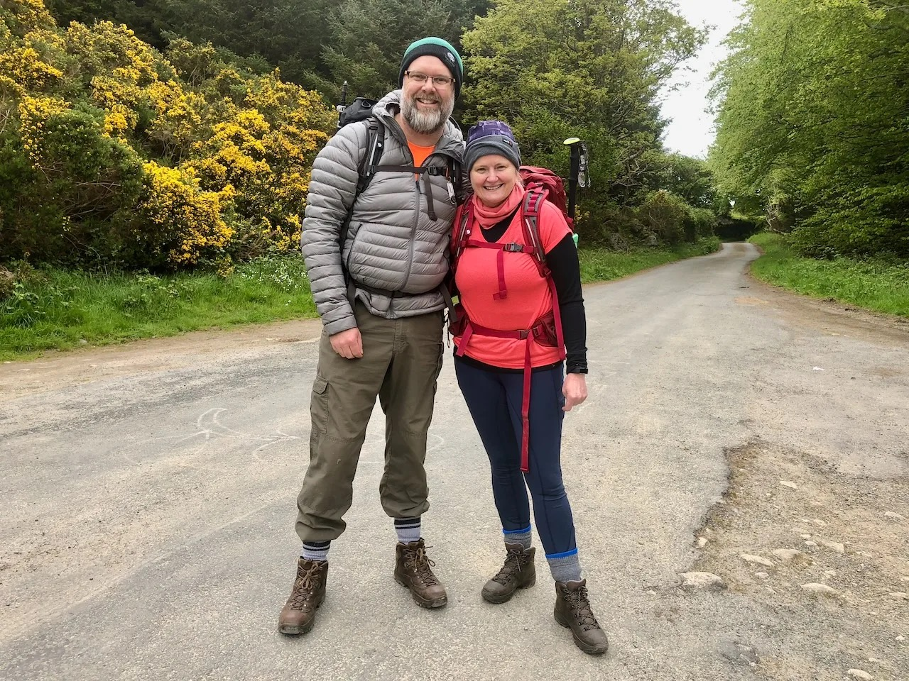

Giant's Causeway Walking Holiday — 8 Days
The complete Causeway Coast experience
Imagine standing on the edge of a 40,000-column basalt wonder, the Giant's Causeway spreading beneath your feet like nature's own ancient architecture. This 8-day journey takes you through the heart of Northern Ireland's most dramatic landscape — where hidden glens meet towering sea cliffs, and every turn reveals a view that stops you in your tracks. You'll walk through the misty Glenariff Forest (the Queen of the Glens), cross rope bridges suspended over 80-foot gorges, and discover wind-swept beaches where legends say giants once walked. This isn't a rushed itinerary. Over 7 nights, you'll build a real connection with the Antrim Coast — the kind where locals greet you by name, and you start recognising the different moods of the sea. You'll experience everything: ancient woodland paths alive with birdsong, tidal sections that require timing and adventure, coastal trails with views that reach Scotland on clear days, and the unmistakable thrill of standing at one of Europe's most extraordinary geological sites. Whether you're a seasoned hiker chasing bucket-list experiences or someone stepping onto serious hills for the first time, this tour meets you where you are. With professional guides, comfortable B&B accommodation, and all your logistics handled, you're free to focus on what matters: the walking, the landscape, and the stories this place has to tell.
Highlights
Ancient Forests & Hidden Glens**
Begin your adventure in Glenariff Forest Park, where ancient woodlands and cascading waterfalls create an almost magical atmosphere. The Moyle Way winds through these glens, revealing a softer side of the Antrim landscape before the coast reveals its true drama.
The Legendary Carrick-a-rede Rope Bridge**
Cross the iconic rope bridge suspended 80 feet above crashing waves — it's genuinely thrilling, genuinely Irish, and genuinely unforgettable. The bridge has been part of local life for centuries; fishermen built it to access salmon-rich waters, and now walkers tackle it for the rush and the view.
The Giant's Causeway: UNESCO World Heritage Site**
Walk out onto 40,000 perfectly hexagonal basalt columns, formed 60 million years ago during volcanic eruptions. This is one of Europe's most extraordinary natural wonders and a UNESCO-listed site. The walk here (Day 6) is considered the best coastal walk in Ireland, passing White Park Bay's white sand and the atmospheric ruins of Dunseverick Castle.
Rathlin Island: Seabirds, Solitude & Scotland Views**
Take the ferry to Ireland's most northerly inhabited island, where puffins, razorbills, and guillemots nest on dramatic cliffs. The RSPB lighthouse and the island's quiet beauty make this a genuinely special day. On clear days, Scotland is visible across the water.
Who Is This For?
Tour Itinerary
Day
1
Arrival in Cushendall
expand_more
Arrival in Cushendall
Arrive in the charming coastal village of Cushendall. Your accommodation and guide briefing will get you oriented. Settle in, meet your group, and start getting your bearings. The village has excellent local restaurants if you want dinner recommendations.
Day
2
Glenariff Forest Park to Cushendall
expand_more
Glenariff Forest Park to Cushendall
Walk through the enchanting Glenariff Forest Park, where ancient woodland and cascading waterfalls create an almost dreamlike landscape. This is the gentler introduction to the terrain, building your legs and your confidence before the coastal drama unfolds.
Day
3
Moyle Way — Orra Beg to Ballycastle
expand_more
Moyle Way — Orra Beg to Ballycastle
Follow the historic Moyle Way, which winds through wooded glens with increasingly spectacular views. The terrain is varied — woodland paths, open hillside, and the first glimpses of the coast. You'll finish in Ballycastle, where you'll base for the next two nights.
Day
4
Rathlin Island Adventure
expand_more
Rathlin Island Adventure
Take the ferry to Rathlin Island (ferry costs not included, ~€15–20 return). Once there, choose your own adventure: gentle coastal walks or more ambitious hikes around the island's perimeter. The RSPB East Lighthouse is the main attraction — a dramatic clifftop location where you can spot puffins (May–July), razorbills, and guillemots. You can rent a bike to explore further, or simply soak in the quiet beauty and the sense of being at Ireland's most northerly point. Return by evening ferry.
Day
5
Ballycastle to Ballintoy
expand_more
Ballycastle to Ballintoy
This is your introduction to the iconic Causeway Coast. Walk across moorland and coastal paths, with your first real sea-cliff views building towards the day's highlight: the legendary Carrick-a-rede Rope Bridge. Suspended 80 feet above a gorge, with the Atlantic crashing below, this is as close to adventure as walking gets. The bridge accesses Carrick Island (fishing base historically). Cross at your own pace, soak in the adrenaline, and savour Ballintoy's whitewashed charm.
Day
6
Ballintoy to Giant's Causeway & Bushmills
expand_more
Ballintoy to Giant's Causeway & Bushmills
This is the walk that earned its reputation. Depart Ballintoy and walk into coastal legend. You'll pass the otherworldly White Park Bay — a crescent of golden sand where the drama of sea cliffs meets beach. Continue past Portbraddan (the smallest church in Ireland) and the moody ruins of Dunseverick Castle, perched impossibly on a sea stack. Tidal sections require planning, but they're part of the adventure — you'll walk where the landscape dictates. Finally, you reach the Giant's Causeway: 40,000 basalt columns arrange themselves into hexagons, each one mathematically perfect, all formed 60 million years ago. Walk among them at your own pace, absorb the scale, understand why this is a UNESCO World Heritage Site and one of Ireland's most visited natural attractions. Finish in Bushmills, home to the world's oldest licensed whiskey distillery (tours available if you're interested).
Day
7
Portballintrae to Portstewart
expand_more
Portballintrae to Portstewart
Your final coastal walk follows the drama to its conclusion. Walk past Dunluce Castle — those dramatic ruins perched on a sea cliff — and continue via Ramore Head to finish in Portstewart, a seaside town with excellent restaurants and an easy-going vibe. This day pulls together everything you've learned about reading the landscape, timing the tides, and enjoying the raw beauty of the Antrim Coast.
Day
8
Departure
expand_more
Departure
Head home with memories, sore legs in the nicest way, and probably already planning your next walking holiday.
Accommodation
Best Time to Visit
Choose your ideal season based on weather, crowds, and daylight hours.
★ = Best months ✓ = Available
From
Based on 2 sharing
Book at least 28 days in advance
Price Match Promise
Found this holiday cheaper? Send us the URL and we\'ll match the itinerary, services, and price.
What's Included
- check_circle {duration_days - 1} nights B&B accommodation (en suite)
- check_circle Daily luggage transfers
- check_circle Detailed route maps & walking notes
- check_circle 24/7 emergency support phone line
- check_circle Pre-trip planning assistance
- check_circle Irish breakfast each morning
Not Included
- cancel Travel to/from start and end points
- cancel Evening meals (arranged locally)
- cancel Travel insurance
- cancel Personal walking equipment

C&LCliff & Louise
Your Personal Hosts
Have a question about this tour? We've walked it dozens of times and love helping you plan your trip.
forum Chat on WhatsAppFrequently Asked Questions
Do your tours cover Northern Ireland as well as the Republic? expand_more
What is included in a self-guided walking holiday? expand_more
What is NOT included in the tour price? expand_more
Is a GPS app or digital navigation included? expand_more
Is 24/7 emergency support really available? expand_more
Are evening meals included? expand_more
Are lunches included? expand_more
What is the difference between a self-guided and a guided walking tour? expand_more
Showing 8 of 58 FAQs · View all FAQs
Similar Walks You'll Love
Similar difficulty and nearby destinations